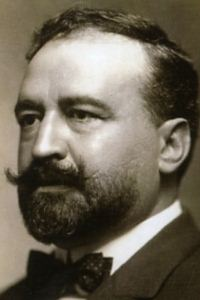

(Valencia, 29 de enero de 1867 – Menton, Francia, 28 de enero de 1928)
Vicente Blasco Ibáñez nació en 1867 en Valencia. En su juventud se afilió al movimiento republicano y fue editor del diario antimonárquico El Pueblo. En 1892 publicó su primera novela, La araña negra. Condenado en 1896 a trabajos forzados por sus actividades políticas, posteriormente llegó a ser diputado por el Partido Republicano.
Su primera obra de éxito fue La barraca (1898). Las obras que le dieron un gran éxito internacional fueron Sangre y arena (1908) y Los cuatro jinetes del Apocalipsis (1916), sobre las que se han realizado varias películas.
|
 |
|